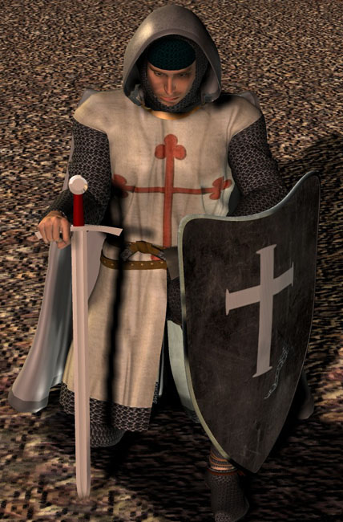

La Spada Templare
|
|
La Spada Templare |
|
L'arma dei Cavalieri Templari |
Recensione della spada dell'ordine religioso più forte e temuto dell'occidente:
I Cavalieri Templari!
|  |
Oggetto della recensione
Questa è la recensione della Templar di Albion, uno dei primi modelli ad essere entrato in produzione nella serie denominata "2nd Generation" che si ripropone di costruire, dopo scrupolose ricerche sugli originali, lame storicamente accurate da ogni punto di vista (non solo dal lato estetico).
 |
Chi erano i Templari
Il termine "monaco guerriero" ad alcuni può far venire in mente il monastero di Shaolin o comunque qualcosa di collegato alle arti marziali orientali, nonostante ciò anche in occidente, secoli prima, sono esistite analoghe figure non meno forti, rispettate, determinate e temute delle loro controparti orientali.
Nell'alto Medioevo, in tutta Europa, era molto diffusa la paura del mondo Islamico. All'insegna di questa religione molti popoli si erano uniti e minacciavano direttamente o indirettamente le terre cristiane. I pellegrini cristiani che si recavano nelle terre sante venivano spesso assaliti e privati dei loro beni e non raramente anche della vita.
Dopo la prima crociata, nonostante le vittoria conseguite, la vie della Terra Santa continuava ad essere molto pericolosa e fu così che un gruppo di 5 cavalieri guidati da un Italiano, Ugone dei Pagani (o Hugues de Payns alla francese) si presentò al Re cristiano di Gerusalemme per offrire i propri servigi, essi avrebbero protetto e assistito i pellegrini nelle terre sante e il loro nome sarebbe stato quello dei "Poveri Cavalieri di Cristo". Il Re assegnò loro un luogo in cui alloggiare costruito, si diceva, sui resti dell'antico tempio di Salomone, per questo la gente iniziò a chiamarli "i Templari".
L'anno stesso venne stilata la regola dell'ordine e sottoposta alla ratifica papale. A Roma ci furono numerose perplessità dal momento che in essa, oltre ai vari obblighi religiosi, vi era anche l'obbligo di portare le armi e di combattere e ciò era quantomeno insolito. In ogni caso alla fine l'ordine venne ratificato e da quel momento nacquero ufficialmente i Cavalieri Templari.
Le regole erano durissime, la sveglia era alle 4 e vi era l'obbligo di dormire in armi per essere sempre pronti ad ogni evenienza, si doveva assistere ogni giorno ad una funzione religiosa, i contatti con l'altro sesso erano proibiti. In battaglia non era contemplata la ritirata a meno che non si fosse nel rapporto di 3 avversari contro 1 e la disciplina era ferrea. La ricompensa, in caso di morte in battaglia, sarebbe stata il perdono di tutti i peccati e l'immediato ingresso in Paradiso.
Non c'è bisogno di dire che chi fosse disposto a sottoporsi ad una vita simile doveva essere animato da una fede incrollabile e questo spiega in parte la loro fama di guerrieri determinati e implacabili.
In breve tempo i Templari furono imitati da altri ordini che presero le armi di cui i più famosi sono i Cavalieri Ospitalieri di S.Giovanni d'Acri e i Cavalieri Teutonici.
Nella loro storia compirono imprese eccezionali, pur combattendo quasi sempre in condizioni di netta inferiorità numerica riuscirono quasi sempre a strappare la vittoria (le loro sconfitte in 200 anni di battaglie si contano sulle dita di una mano). I musulmani li chiamavano i Diavoli Rossi (per via della croce che portavano sul petto).
Quando Salah Al Din, solitamente generoso con i nemici sconfitti, sbaragliò l'esercito di Gerusalemme, fece uccidere tutti i templari e gli ospitalieri dicendo: "in questo modo estirpiamo il cancro di questo paese giacchè non c'è speranza che questi uomini abbandonino la loro fede o possano essere resi schiavi".
 |
S.Sepolcro, Ospitalieri, Templari, S. Giacomo, Teutonici
WORK IN PROGRESS